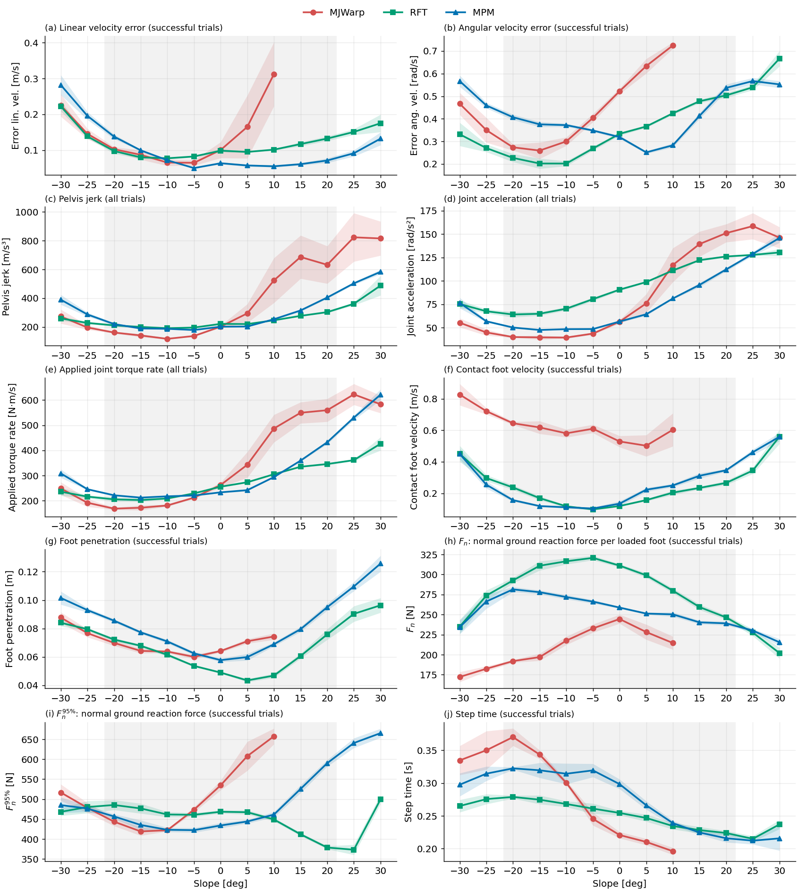
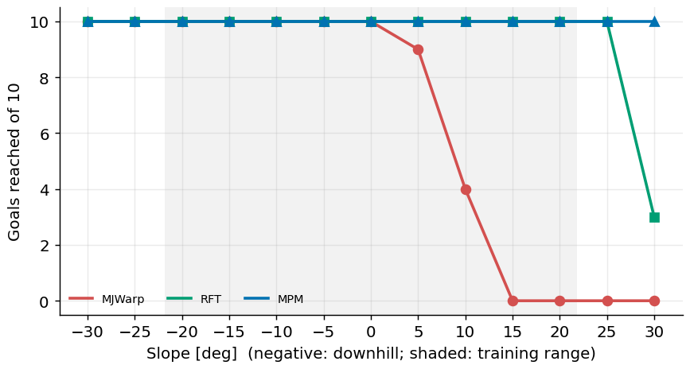
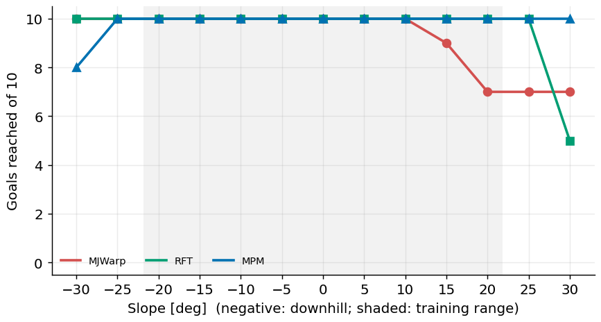
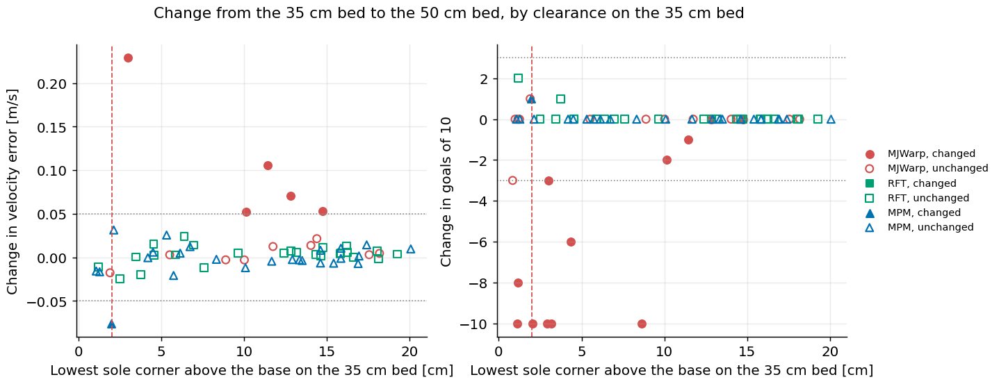

Slopes on firm sand
- Uphill, MPM reaches every goal; RFT fails at +30°, MJWarp from +10° to +20°.
- Downhill, every policy reaches the goal; MPM tracks the command worst.
- The +30° result holds without the start drop and with the sand kept awake.
Only MPM climbs every sand slope up to +30°.

Paper version, merged (2 by 3): slopes on top, ground materials below. unchecked

Paper version (1 by 3): success, tracking error, stance foot velocity against slope. unchecked

MPM tracks best uphill and worst on steep downhill slopes.

Details: every slope, with step time, sinkage and base clearance
Final rerun, 2026-11-24, not yet independently checked. Beach sand (1800 kg/m³, friction 0.80, no cohesion), 1.0 m/s command, 13 s, slopes −30° to +30° in 5° steps, 0.50 m bed (the training bed is 0.25 m). 10 trials per policy and slope: seeds 41 and 42 with 5 trials each, because 10 trials on this bed do not fit in the memory of one L40. MJWarp 3qymp37c, RFT 6t0h2ud8 and MPM aga5ovkp, each at its final checkpoint (iteration 19,999), run together in every workflow from one code bundle.
Goals of 10 at +10°, +15°, +20°, +25°, +30°. MJWarp 4, 0, 0, 0, 0; RFT 10, 10, 10, 10, 3; MPM 10 at each. With 40 trials per cell RFT reaches 39 of 40 at +25° and 13 of 40 at +30°, MPM 40 of 40 at each: MPM and RFT are separated at +30° (Fisher's exact test, p = 2e-11) and not at +25° (p = 1). Downhill every policy reaches every goal.
Velocity error of the successful trials. Uphill MPM is lowest (0.06–0.07 m/s up to +20°, 0.13 m/s at +30°; RFT 0.10–0.13 and 0.18 m/s). On steep downhill slopes MPM is highest: 0.28, 0.20 and 0.14 m/s at −30°, −25° and −20°, against 0.22, 0.14 and 0.10 m/s for RFT.
On rigid ground the order reverses (same slopes, no sand, same bundle, 10 trials): at +30° MJWarp reaches 9 of 10, RFT 8 and MPM 0; at −30° MJWarp 9, RFT 7 and MPM 5. Between −20° and +15° all three reach 10 of 10. Each policy is best on the kind of ground it trained on.
Does the result depend on how the test is set up? Three controls on the steep slopes, 40 trials per policy each (table below): the robot started on the settled surface instead of dropped onto it, the same with 6 s settling, and with 12 s settling and all sand near the robot kept awake. MPM reaches 40 of 40 at every slope in every setting. RFT reaches 39 or 40 of 40 up to +25° in every setting and 13, 9, 18 and 1 of 40 at +30°. MJWarp reaches 0 of 40 from +20° in every setting; at +15° it reaches 0 of 40 with the task's sleeping and 23 of 40 with the sand awake, so where MJWarp starts to fail (between +10° and +20°) depends on the setting. RFT's success rate at +30° is not a stable number either: it ranges from 1 to 18 of 40 over the settings, and only its separation from MPM holds in all of them. RFT's velocity error at +25° is 0.16 m/s in the task setting started on the surface and 0.26 m/s with the sand awake, more than the 0.05 m/s tolerance, so no statement on RFT's error at +25° and above is made from one setting. The figures above use the default start, 2.5 s settling and the task's sleeping. The sand is generated with 1.25 particles per cell edge in every run; at that density the bed compacts while it settles (task record), which is a condition of every sinkage and sand-motion number.
What a trial is. Within one run all trials share one settled bed (one template) and differ only in the robot's start: position within ±0.1 m, heading within ±0.1 rad, joint angles within ±10 %. The starts are the same for all three policies. Forty trials are forty starts on that bed, not forty beds.
Limits. One training seed and one checkpoint per policy. The start states on the 0.50 m bed are not the same ten as on the other beds. The robot starts 0.76 m above the level the sand is generated at and the settled surface of this bed lies 10 cm below it, so every trial starts with a 10 cm drop onto the flat start platform, 1.9 m before the slope; on level ground of this bed all 30 trials reach the goal, and the uphill failures happen 3 to 7 m from the start. MJWarp's numbers depend on the bed depth (block below).
Training budget, from the W&B configs. MJWarp and RFT: 1024 environments on each of 4 GPUs, 24 steps per iteration, 20,000 iterations, about 1.97 billion transitions each. MPM: 64 environments on each of 40 GPUs, 24 steps, 20,000 iterations, about 1.23 billion transitions. This reads the configured environment count as per GPU, which is not verified beyond the config. All three use training seed 42.
| Ground | Policy | Goals | Velocity error, successful trials [m/s] | Step time [s] | Foot sinkage from the settled surface [cm] | Closest approach of the loaded feet to the rigid base, median over trials [cm] |
|---|---|---|---|---|---|---|
| -30° | MJWarp | 10 / 10 | 0.23 ± 0.03 | 0.33 ± 0.02 | 8.8 ± 0.4 | 10.7 (1 of 10 trials within 2 cm of the base) |
| -30° | RFT | 10 / 10 | 0.22 ± 0.01 | 0.27 ± 0.01 | 8.4 ± 0.3 | 15.2 |
| -30° | MPM | 10 / 10 | 0.28 ± 0.03 | 0.30 ± 0.02 | 10.2 ± 0.5 | 12.7 |
| -25° | MJWarp | 10 / 10 | 0.15 ± 0.01 | 0.35 ± 0.03 | 7.7 ± 0.3 | 16.9 |
| -25° | RFT | 10 / 10 | 0.14 ± 0.00 | 0.28 ± 0.01 | 8.0 ± 0.1 | 20.8 |
| -25° | MPM | 10 / 10 | 0.20 ± 0.01 | 0.31 ± 0.01 | 9.3 ± 0.2 | 19.0 |
| -20° | MJWarp | 10 / 10 | 0.10 ± 0.01 | 0.37 ± 0.01 | 7.0 ± 0.2 | 20.4 |
| -20° | RFT | 10 / 10 | 0.10 ± 0.01 | 0.28 ± 0.00 | 7.2 ± 0.1 | 24.0 |
| -20° | MPM | 10 / 10 | 0.14 ± 0.01 | 0.32 ± 0.00 | 8.6 ± 0.1 | 22.4 |
| -15° | MJWarp | 10 / 10 | 0.09 ± 0.01 | 0.34 ± 0.01 | 6.4 ± 0.2 | 22.1 |
| -15° | RFT | 10 / 10 | 0.08 ± 0.00 | 0.27 ± 0.01 | 6.8 ± 0.1 | 25.7 |
| -15° | MPM | 10 / 10 | 0.10 ± 0.00 | 0.32 ± 0.01 | 7.7 ± 0.1 | 25.0 |
| -10° | MJWarp | 10 / 10 | 0.07 ± 0.01 | 0.30 ± 0.00 | 6.4 ± 0.1 | 23.0 |
| -10° | RFT | 10 / 10 | 0.08 ± 0.00 | 0.27 ± 0.00 | 6.1 ± 0.1 | 27.1 |
| -10° | MPM | 10 / 10 | 0.07 ± 0.00 | 0.31 ± 0.02 | 7.1 ± 0.1 | 27.0 |
| -5° | MJWarp | 10 / 10 | 0.06 ± 0.01 | 0.25 ± 0.01 | 6.0 ± 0.2 | 23.3 |
| -5° | RFT | 10 / 10 | 0.08 ± 0.00 | 0.26 ± 0.01 | 5.4 ± 0.1 | 27.1 |
| -5° | MPM | 10 / 10 | 0.05 ± 0.00 | 0.32 ± 0.01 | 6.3 ± 0.1 | 28.9 |
| +0° | MJWarp | 10 / 10 | 0.10 ± 0.02 | 0.22 ± 0.00 | 6.4 ± 0.1 | 22.3 |
| +0° | RFT | 10 / 10 | 0.10 ± 0.00 | 0.25 ± 0.00 | 4.9 ± 0.1 | 25.2 |
| +0° | MPM | 10 / 10 | 0.06 ± 0.00 | 0.30 ± 0.01 | 5.8 ± 0.1 | 28.7 |
| +5° | MJWarp | 9 / 10 | 0.17 ± 0.09 | 0.21 ± 0.00 | 7.1 ± 0.2 | 20.0 |
| +5° | RFT | 10 / 10 | 0.10 ± 0.00 | 0.25 ± 0.01 | 4.3 ± 0.1 | 25.8 |
| +5° | MPM | 10 / 10 | 0.06 ± 0.00 | 0.27 ± 0.01 | 6.0 ± 0.2 | 27.7 |
| +10° | MJWarp | 4 / 10 | 0.31 ± 0.09 | 0.20 ± 0.01 | 7.4 ± 0.2 | 12.8 |
| +10° | RFT | 10 / 10 | 0.10 ± 0.00 | 0.23 ± 0.00 | 4.7 ± 0.1 | 24.6 |
| +10° | MPM | 10 / 10 | 0.06 ± 0.00 | 0.24 ± 0.00 | 6.9 ± 0.1 | 24.9 |
| +15° | MJWarp | 0 / 10 | — | — | — | 11.1 |
| +15° | RFT | 10 / 10 | 0.12 ± 0.01 | 0.23 ± 0.01 | 6.1 ± 0.2 | 22.3 |
| +15° | MPM | 10 / 10 | 0.06 ± 0.00 | 0.22 ± 0.00 | 8.0 ± 0.2 | 21.7 |
| +20° | MJWarp | 0 / 10 | — | — | — | 11.8 |
| +20° | RFT | 10 / 10 | 0.13 ± 0.01 | 0.22 ± 0.00 | 7.6 ± 0.4 | 19.6 |
| +20° | MPM | 10 / 10 | 0.07 ± 0.01 | 0.22 ± 0.01 | 9.5 ± 0.2 | 18.0 |
| +25° | MJWarp | 0 / 10 | — | — | — | 9.7 |
| +25° | RFT | 10 / 10 | 0.15 ± 0.01 | 0.22 ± 0.00 | 9.0 ± 0.5 | 14.5 |
| +25° | MPM | 10 / 10 | 0.09 ± 0.01 | 0.21 ± 0.01 | 11.0 ± 0.3 | 13.6 |
| +30° | MJWarp | 0 / 10 | — | — | — | 10.2 |
| +30° | RFT | 3 / 10 | 0.18 ± 0.02 | 0.24 ± 0.01 | 9.6 ± 0.5 | 7.4 |
| +30° | MPM | 10 / 10 | 0.13 ± 0.02 | 0.22 ± 0.02 | 12.6 ± 0.6 | 6.5 |
The same sweep as line plots


The same sweep on the 25 cm bed of training

| Ground | Policy | Goals | Velocity error, successful trials [m/s] | Step time [s] | Foot sinkage from the settled surface [cm] | Closest approach of the loaded feet to the rigid base, median over trials [cm] |
|---|---|---|---|---|---|---|
| -30° | MJWarp | 10 / 10 | 0.27 ± 0.02 | 0.33 ± 0.03 | 6.5 ± 0.3 | 2.0 (5 of 10 trials within 2 cm of the base) |
| -30° | RFT | 10 / 10 | 0.31 ± 0.08 | 0.27 ± 0.01 | 7.2 ± 0.2 | 2.0 (5 of 10 trials within 2 cm of the base) |
| -30° | MPM | 8 / 10 | 0.72 ± 0.13 | 0.29 ± 0.02 | 8.8 ± 0.6 | 1.8 (9 of 10 trials within 2 cm of the base) |
| -25° | MJWarp | 10 / 10 | 0.16 ± 0.01 | 0.35 ± 0.02 | 6.2 ± 0.1 | 3.6 (1 of 10 trials within 2 cm of the base) |
| -25° | RFT | 10 / 10 | 0.18 ± 0.02 | 0.28 ± 0.01 | 6.9 ± 0.1 | 3.3 (1 of 10 trials within 2 cm of the base) |
| -25° | MPM | 10 / 10 | 0.34 ± 0.03 | 0.31 ± 0.01 | 8.5 ± 0.2 | 2.4 (2 of 10 trials within 2 cm of the base) |
| -20° | MJWarp | 10 / 10 | 0.11 ± 0.01 | 0.36 ± 0.01 | 5.6 ± 0.2 | 5.8 |
| -20° | RFT | 10 / 10 | 0.10 ± 0.01 | 0.29 ± 0.01 | 6.4 ± 0.1 | 6.4 |
| -20° | MPM | 10 / 10 | 0.17 ± 0.01 | 0.31 ± 0.01 | 7.6 ± 0.2 | 4.8 |
| -15° | MJWarp | 10 / 10 | 0.07 ± 0.01 | 0.37 ± 0.02 | 5.0 ± 0.2 | 7.6 |
| -15° | RFT | 10 / 10 | 0.07 ± 0.00 | 0.29 ± 0.01 | 5.7 ± 0.1 | 9.3 |
| -15° | MPM | 10 / 10 | 0.10 ± 0.01 | 0.33 ± 0.01 | 6.6 ± 0.2 | 7.7 |
| -10° | MJWarp | 10 / 10 | 0.05 ± 0.00 | 0.35 ± 0.01 | 4.3 ± 0.1 | 8.6 |
| -10° | RFT | 10 / 10 | 0.06 ± 0.00 | 0.30 ± 0.01 | 5.1 ± 0.1 | 9.5 |
| -10° | MPM | 10 / 10 | 0.07 ± 0.00 | 0.32 ± 0.01 | 5.8 ± 0.2 | 10.2 |
| -5° | MJWarp | 10 / 10 | 0.04 ± 0.00 | 0.29 ± 0.01 | 4.4 ± 0.1 | 9.0 |
| -5° | RFT | 10 / 10 | 0.08 ± 0.00 | 0.28 ± 0.01 | 4.3 ± 0.1 | 9.7 |
| -5° | MPM | 10 / 10 | 0.05 ± 0.00 | 0.33 ± 0.01 | 5.0 ± 0.1 | 12.0 |
| +0° | MJWarp | 10 / 10 | 0.04 ± 0.00 | 0.24 ± 0.00 | 3.9 ± 0.1 | 9.4 |
| +0° | RFT | 10 / 10 | 0.10 ± 0.00 | 0.27 ± 0.00 | 3.5 ± 0.1 | 9.8 |
| +0° | MPM | 10 / 10 | 0.05 ± 0.00 | 0.31 ± 0.01 | 4.3 ± 0.1 | 12.1 |
| +5° | MJWarp | 10 / 10 | 0.05 ± 0.01 | 0.22 ± 0.00 | 4.1 ± 0.1 | 7.6 |
| +5° | RFT | 10 / 10 | 0.09 ± 0.00 | 0.26 ± 0.01 | 3.2 ± 0.1 | 10.0 |
| +5° | MPM | 10 / 10 | 0.07 ± 0.00 | 0.28 ± 0.00 | 4.5 ± 0.1 | 10.8 |
| +10° | MJWarp | 10 / 10 | 0.12 ± 0.08 | 0.21 ± 0.01 | 4.8 ± 0.1 | 3.2 (1 of 10 trials within 2 cm of the base) |
| +10° | RFT | 10 / 10 | 0.10 ± 0.00 | 0.24 ± 0.00 | 3.2 ± 0.1 | 9.1 |
| +10° | MPM | 10 / 10 | 0.06 ± 0.00 | 0.24 ± 0.00 | 5.0 ± 0.1 | 7.9 |
| +15° | MJWarp | 9 / 10 | 0.09 ± 0.02 | 0.20 ± 0.00 | 5.0 ± 0.1 | 2.7 (2 of 10 trials within 2 cm of the base) |
| +15° | RFT | 10 / 10 | 0.11 ± 0.00 | 0.23 ± 0.00 | 3.7 ± 0.1 | 7.0 |
| +15° | MPM | 10 / 10 | 0.06 ± 0.00 | 0.23 ± 0.00 | 5.5 ± 0.2 | 5.9 |
| +20° | MJWarp | 7 / 10 | 0.14 ± 0.05 | 0.19 ± 0.00 | 5.3 ± 0.1 | 1.1 (9 of 10 trials within 2 cm of the base) |
| +20° | RFT | 10 / 10 | 0.13 ± 0.01 | 0.23 ± 0.00 | 4.5 ± 0.2 | 4.7 |
| +20° | MPM | 10 / 10 | 0.08 ± 0.01 | 0.22 ± 0.00 | 6.0 ± 0.3 | 3.6 |
| +25° | MJWarp | 7 / 10 | 0.21 ± 0.12 | 0.20 ± 0.00 | 4.8 ± 0.4 | 1.0 (10 of 10 trials within 2 cm of the base) |
| +25° | RFT | 10 / 10 | 0.23 ± 0.04 | 0.22 ± 0.01 | 5.1 ± 0.3 | 1.3 (10 of 10 trials within 2 cm of the base) |
| +25° | MPM | 10 / 10 | 0.14 ± 0.01 | 0.22 ± 0.01 | 6.2 ± 0.2 | 1.3 (10 of 10 trials within 2 cm of the base) |
| +30° | MJWarp | 7 / 10 | 0.34 ± 0.07 | 0.20 ± 0.01 | 4.4 ± 0.2 | 1.0 (10 of 10 trials within 2 cm of the base) |
| +30° | RFT | 5 / 10 | 0.29 ± 0.05 | 0.21 ± 0.01 | 5.2 ± 0.2 | 1.1 (10 of 10 trials within 2 cm of the base) |
| +30° | MPM | 10 / 10 | 0.23 ± 0.02 | 0.21 ± 0.01 | 5.4 ± 0.2 | 1.2 (10 of 10 trials within 2 cm of the base) |
Bed depth: why the 0.50 m bed, and what changes with depth
The slope sweep and the six sands of the material axis (level ground and +10°) were run on 0.25, 0.35 and 0.50 m beds. Rule fixed before the runs: a cell counts as unchanged between 0.35 and 0.50 m if its goal count differs by at most 3 of 10 and its velocity error by at most 0.05 m/s. Of 75 cells, 13 changed: 12 of MJWarp, 0 of RFT and 1 of MPM (table). MJWarp always does worse on the deeper bed.
The earlier validity rule (a cell is invalid if any trial comes within 2 cm of the rigid base) does not pick out the cells that change: 10 of the 13 changed cells pass it, the changed cells reach up to 14.7 cm of clearance, and 44 unchanged cells lie at or below that. As decided beforehand for this case, clearance is dropped as a validity rule and results are quoted from the deepest bed. For RFT and MPM that bed is deep enough by this test; for MJWarp no bed tested is: where it has not already failed, it could do worse on a deeper bed.
On the 0.35 m bed the feet come within 2 cm of the base at +30° in 36 of 40 MPM trials and 33 of 40 RFT trials; on the 0.50 m bed in 1 of 40 MPM trials (1.9 cm) and no RFT trial. The goal counts at +30° are the same on both beds (RFT 10 and 13 of 40, MPM 40 and 40 of 40).


| Policy | Sand | Slope | Goals of 10, 0.35 → 0.50 m | Velocity error [m/s] | Lowest sole corner above the base [cm] |
|---|---|---|---|---|---|
| MJWarp | 2000 kg/m³, friction 0.50 | +0° | 10 → 0 | 0.35 → — | 2.0 → 0.9 |
| MJWarp | 2000 kg/m³, friction 0.70 | +0° | 10 → 10 | 0.05 → 0.12 | 12.8 → 17.4 |
| MJWarp | 1000 kg/m³, friction 0.70 | +0° | 10 → 0 | 0.29 → — | 3.2 → 0.9 |
| MJWarp | 500 kg/m³, friction 0.90 | +0° | 10 → 0 | 0.32 → — | 2.9 → 0.8 |
| MJWarp | 2000 kg/m³, friction 0.70 | +10° | 10 → 0 | 0.06 → — | 8.6 → 8.5 |
| MJWarp | 2000 kg/m³, friction 0.90 | +10° | 10 → 8 | 0.13 → 0.18 | 10.1 → 16.0 |
| MJWarp | 1000 kg/m³, friction 0.70 | +10° | 10 → 0 | 0.62 → — | 1.1 → 0.9 |
| MJWarp | 500 kg/m³, friction 0.90 | +10° | 8 → 0 | 0.56 → — | 1.2 → 1.0 |
| MJWarp | beach sand | +0° | 10 → 10 | 0.05 → 0.10 | 14.7 → 19.5 |
| MJWarp | beach sand | +5° | 10 → 9 | 0.06 → 0.17 | 11.4 → 9.1 |
| MJWarp | beach sand | +10° | 7 → 4 | 0.08 → 0.31 | 3.0 → 10.8 |
| MJWarp | beach sand | +15° | 6 → 0 | 0.29 → — | 4.3 → 9.8 |
| MPM | beach sand | -30° | 9 → 10 | 0.36 → 0.28 | 2.0 → 9.2 |
Steep uphill slopes with 40 trials per policy: two beds, start with and without the drop, sand asleep and awake
Seeds 41 to 44 with 10 trials each on the 0.35 m bed, seeds 41 to 48 with 5 trials each on the 0.50 m bed. "Separated" was defined beforehand as Fisher's exact test on goals giving p < 0.05; the criterion for the controls (MPM against RFT still separated at +30°, each count within 12 of 40 of the default-start count) was written down before they ran. It is met by RFT and MPM in every setting, and by MJWarp except at +15° with the sand awake.
| Setting | Slope | MJWarp goals | RFT goals | MPM goals | Fisher p, MPM against RFT | Trials within 2 cm of the base (MJWarp / RFT / MPM) |
|---|---|---|---|---|---|---|
| 0.35 m bed, default start, 2.5 s settling | +15° | 23 / 40 | 40 / 40 | 40 / 40 | 1 | 0 / 0 / 0 |
| 0.35 m bed, default start, 2.5 s settling | +20° | 0 / 40 | 40 / 40 | 40 / 40 | 1 | 18 / 0 / 0 |
| 0.35 m bed, default start, 2.5 s settling | +25° | 0 / 40 | 37 / 40 | 40 / 40 | 0.24 | 28 / 0 / 3 |
| 0.35 m bed, default start, 2.5 s settling | +30° | 0 / 40 | 10 / 40 | 40 / 40 | 1.9e-13 | 25 / 33 / 36 |
| 0.50 m bed, default start, 2.5 s settling | +15° | 0 / 40 | 40 / 40 | 40 / 40 | 1 | 0 / 0 / 0 |
| 0.50 m bed, default start, 2.5 s settling | +20° | 0 / 40 | 40 / 40 | 40 / 40 | 1 | 0 / 0 / 0 |
| 0.50 m bed, default start, 2.5 s settling | +25° | 0 / 40 | 39 / 40 | 40 / 40 | 1 | 0 / 0 / 0 |
| 0.50 m bed, default start, 2.5 s settling | +30° | 0 / 40 | 13 / 40 | 40 / 40 | 1.6e-11 | 0 / 0 / 1 |
| 0.50 m bed, started on the surface, 2.5 s settling | +15° | 0 / 40 | 40 / 40 | 40 / 40 | 1 | 0 / 0 / 0 |
| 0.50 m bed, started on the surface, 2.5 s settling | +20° | 0 / 40 | 40 / 40 | 40 / 40 | 1 | 0 / 0 / 0 |
| 0.50 m bed, started on the surface, 2.5 s settling | +25° | 0 / 40 | 40 / 40 | 40 / 40 | 1 | 0 / 0 / 0 |
| 0.50 m bed, started on the surface, 2.5 s settling | +30° | 0 / 40 | 9 / 40 | 40 / 40 | 3.8e-14 | 0 / 0 / 0 |
| 0.50 m bed, started on the surface, 6 s settling | +15° | 0 / 40 | 40 / 40 | 40 / 40 | 1 | 0 / 0 / 0 |
| 0.50 m bed, started on the surface, 6 s settling | +20° | 0 / 40 | 40 / 40 | 40 / 40 | 1 | 0 / 0 / 0 |
| 0.50 m bed, started on the surface, 6 s settling | +25° | 0 / 40 | 40 / 40 | 40 / 40 | 1 | 0 / 0 / 0 |
| 0.50 m bed, started on the surface, 6 s settling | +30° | 0 / 40 | 18 / 40 | 40 / 40 | 8.4e-09 | 0 / 0 / 1 |
| 0.50 m bed, started on the surface, 12 s settling, sand near the robot awake | +15° | 23 / 40 | 40 / 40 | 40 / 40 | 1 | 0 / 0 / 0 |
| 0.50 m bed, started on the surface, 12 s settling, sand near the robot awake | +20° | 0 / 40 | 40 / 40 | 40 / 40 | 1 | 0 / 0 / 0 |
| 0.50 m bed, started on the surface, 12 s settling, sand near the robot awake | +25° | 0 / 40 | 39 / 40 | 40 / 40 | 1 | 0 / 0 / 0 |
| 0.50 m bed, started on the surface, 12 s settling, sand near the robot awake | +30° | 0 / 40 | 1 / 40 | 40 / 40 | 7.6e-22 | 0 / 0 / 0 |
The same sweep on the 35 cm bed
10 trials per policy and slope, seed 41. At +30°, and for MJWarp from +20°, the feet reach the rigid base on this bed.
| Ground | Policy | Goals | Velocity error, successful trials [m/s] | Step time [s] | Foot sinkage from the settled surface [cm] | Closest approach of the loaded feet to the rigid base, median over trials [cm] |
|---|---|---|---|---|---|---|
| -30° | MJWarp | 9 / 10 | 0.24 ± 0.07 | 0.33 ± 0.02 | 7.7 ± 0.3 | 3.3 (1 of 10 trials within 2 cm of the base) |
| -30° | RFT | 10 / 10 | 0.25 ± 0.03 | 0.27 ± 0.01 | 7.4 ± 0.3 | 4.9 |
| -30° | MPM | 9 / 10 | 0.36 ± 0.04 | 0.31 ± 0.01 | 9.2 ± 0.4 | 3.9 (1 of 10 trials within 2 cm of the base) |
| -25° | MJWarp | 10 / 10 | 0.14 ± 0.01 | 0.36 ± 0.02 | 6.7 ± 0.3 | 6.8 |
| -25° | RFT | 10 / 10 | 0.15 ± 0.01 | 0.28 ± 0.01 | 7.3 ± 0.3 | 8.2 |
| -25° | MPM | 10 / 10 | 0.22 ± 0.01 | 0.31 ± 0.01 | 8.9 ± 0.2 | 7.9 |
| -20° | MJWarp | 10 / 10 | 0.11 ± 0.01 | 0.37 ± 0.01 | 6.1 ± 0.2 | 11.0 |
| -20° | RFT | 10 / 10 | 0.09 ± 0.00 | 0.29 ± 0.01 | 6.7 ± 0.2 | 13.0 |
| -20° | MPM | 10 / 10 | 0.15 ± 0.01 | 0.32 ± 0.00 | 8.2 ± 0.2 | 11.5 |
| -15° | MJWarp | 10 / 10 | 0.07 ± 0.01 | 0.36 ± 0.01 | 5.5 ± 0.2 | 13.4 |
| -15° | RFT | 10 / 10 | 0.07 ± 0.00 | 0.29 ± 0.00 | 6.2 ± 0.2 | 15.4 |
| -15° | MPM | 10 / 10 | 0.10 ± 0.01 | 0.33 ± 0.01 | 7.3 ± 0.2 | 14.1 |
| -10° | MJWarp | 10 / 10 | 0.05 ± 0.00 | 0.33 ± 0.00 | 4.9 ± 0.2 | 14.9 |
| -10° | RFT | 10 / 10 | 0.06 ± 0.00 | 0.28 ± 0.01 | 5.6 ± 0.2 | 16.8 |
| -10° | MPM | 10 / 10 | 0.07 ± 0.00 | 0.32 ± 0.01 | 6.4 ± 0.3 | 16.6 |
| -5° | MJWarp | 10 / 10 | 0.04 ± 0.00 | 0.27 ± 0.01 | 4.8 ± 0.2 | 15.1 |
| -5° | RFT | 10 / 10 | 0.08 ± 0.00 | 0.27 ± 0.01 | 4.6 ± 0.3 | 16.6 |
| -5° | MPM | 10 / 10 | 0.05 ± 0.00 | 0.32 ± 0.01 | 5.6 ± 0.2 | 18.0 |
| +0° | MJWarp | 10 / 10 | 0.05 ± 0.01 | 0.24 ± 0.00 | 4.4 ± 0.1 | 15.7 |
| +0° | RFT | 10 / 10 | 0.09 ± 0.00 | 0.27 ± 0.00 | 4.1 ± 0.1 | 17.0 |
| +0° | MPM | 10 / 10 | 0.05 ± 0.00 | 0.31 ± 0.01 | 4.8 ± 0.1 | 17.7 |
| +5° | MJWarp | 10 / 10 | 0.06 ± 0.02 | 0.22 ± 0.00 | 4.7 ± 0.2 | 13.5 |
| +5° | RFT | 10 / 10 | 0.09 ± 0.00 | 0.26 ± 0.00 | 3.3 ± 0.3 | 16.1 |
| +5° | MPM | 10 / 10 | 0.06 ± 0.00 | 0.27 ± 0.00 | 5.1 ± 0.2 | 16.9 |
| +10° | MJWarp | 7 / 10 | 0.08 ± 0.04 | 0.20 ± 0.00 | 5.4 ± 0.2 | 9.9 |
| +10° | RFT | 10 / 10 | 0.10 ± 0.00 | 0.24 ± 0.00 | 3.6 ± 0.2 | 15.5 |
| +10° | MPM | 10 / 10 | 0.06 ± 0.00 | 0.24 ± 0.00 | 5.6 ± 0.1 | 14.7 |
| +15° | MJWarp | 6 / 10 | 0.29 ± 0.09 | 0.19 ± 0.00 | 6.1 ± 0.2 | 5.9 |
| +15° | RFT | 10 / 10 | 0.11 ± 0.00 | 0.23 ± 0.01 | 4.1 ± 0.3 | 13.3 |
| +15° | MPM | 10 / 10 | 0.07 ± 0.00 | 0.23 ± 0.00 | 6.4 ± 0.2 | 12.0 |
| +20° | MJWarp | 0 / 10 | — | — | — | 1.8 (6 of 10 trials within 2 cm of the base) |
| +20° | RFT | 10 / 10 | 0.13 ± 0.01 | 0.22 ± 0.00 | 5.3 ± 0.4 | 10.5 |
| +20° | MPM | 10 / 10 | 0.07 ± 0.01 | 0.21 ± 0.00 | 7.3 ± 0.3 | 8.9 |
| +25° | MJWarp | 0 / 10 | — | — | — | 1.4 (7 of 10 trials within 2 cm of the base) |
| +25° | RFT | 9 / 10 | 0.17 ± 0.02 | 0.22 ± 0.00 | 6.5 ± 0.5 | 4.4 |
| +25° | MPM | 10 / 10 | 0.11 ± 0.01 | 0.21 ± 0.01 | 8.1 ± 0.4 | 4.0 (1 of 10 trials within 2 cm of the base) |
| +30° | MJWarp | 0 / 10 | — | — | — | 1.8 (6 of 10 trials within 2 cm of the base) |
| +30° | RFT | 1 / 10 | 0.19 ± 0.00 | 0.21 ± 0.00 | 8.1 ± 0.0 | 1.8 (6 of 10 trials within 2 cm of the base) |
| +30° | MPM | 10 / 10 | 0.15 ± 0.02 | 0.21 ± 0.01 | 8.7 ± 0.4 | 1.2 (9 of 10 trials within 2 cm of the base) |
Where these runs come from: code, bundle, workflows, seeds, GPU
As recorded by the runs themselves in each result file.
**0.50 m bed: slope sweep (default start)** (`logs/t3/final_1/d50`, 150 result files or parts)
Isaac Lab `0007b2e67`, 72 dirty entries; Newton `48231a989`, 0 dirty entries
Bundle: swift://pdx.s8k.io/AUTH_team-isaac-sqa/isaac-sqa/jkamohara/t3-eval/bundles/bd2f5052f974fca8/upload/
Workflows: t3-final-axis50-s41-1-1; t3-final-axis50-s42-1-1; t3-final-axis50fix-s41-1-1; t3-final-axis50fix-s42-1-1; t3-final-slope50-s41-1-1; t3-final-slope50-s42-1-1
Task: IsaacContrib-Velocity-G1-29dof-MPM-Play; GPU: NVIDIA L40; seeds: 41; 42; trials per run: 5
Checkpoints: mjwarp = `3qymp37c` (sha256 `bf100ea4e913`); mpm_retrain = `aga5ovkp` (sha256 `17b8220cd47d`); rft_deep = `6t0h2ud8` (sha256 `424ec84e7248`)
Example command: `scripts/benchmarks/t3/eval_walk.py --label mjwarp --run_id 3qymp37c --checkpoint logs/t3_checkpoints/mjwarp/model.pt --angle 0 --material beach_sand --density 1000 --friction 0.7 --foot_sand --depth 0.5 --num_trials 5 --seed 41 --out /osmo/data/output/t3/material_axis/sand_d1000_mu0.70_+0`
**0.35 m bed: slope sweep** (`logs/t3/final_1/d35`, 165 result files or parts)
Isaac Lab `0007b2e67`, 72 dirty entries; Newton `48231a989`, 0 dirty entries
Bundle: swift://pdx.s8k.io/AUTH_team-isaac-sqa/isaac-sqa/jkamohara/t3-eval/bundles/bd2f5052f974fca8/upload/
Workflows: t3-final-axis35-1-1; t3-final-grid35-1-1; t3-final-slope35-1-1
Task: IsaacContrib-Velocity-G1-29dof-MPM-Play; GPU: NVIDIA L40; seeds: 41; 42; 43; 44; 45; trials per run: 10; 7
Checkpoints: mjwarp = `3qymp37c` (sha256 `bf100ea4e913`); mpm_retrain = `aga5ovkp` (sha256 `17b8220cd47d`); rft_deep = `6t0h2ud8` (sha256 `424ec84e7248`)
Example command: `scripts/benchmarks/t3/eval_walk.py --label mjwarp --run_id 3qymp37c --checkpoint logs/t3_checkpoints/mjwarp/model.pt --angle 0 --material beach_sand --density 1000 --friction 0.7 --foot_sand --depth 0.35 --out /osmo/data/output/t3/material_axis/sand_d1000_mu0.70_+0`
**0.25 m bed: slope sweep** (`logs/t3/final_1/d25`, 75 result files or parts)
Isaac Lab `0007b2e67`, 72 dirty entries; Newton `48231a989`, 0 dirty entries
Bundle: swift://pdx.s8k.io/AUTH_team-isaac-sqa/isaac-sqa/jkamohara/t3-eval/bundles/bd2f5052f974fca8/upload/
Workflows: t3-final-axis25-1-1; t3-final-slope25-1-1
Task: IsaacContrib-Velocity-G1-29dof-MPM-Play; GPU: NVIDIA L40; seeds: 41; trials per run: 10
Checkpoints: mjwarp = `3qymp37c` (sha256 `bf100ea4e913`); mpm_retrain = `aga5ovkp` (sha256 `17b8220cd47d`); rft_deep = `6t0h2ud8` (sha256 `424ec84e7248`)
Example command: `scripts/benchmarks/t3/eval_walk.py --label mjwarp --run_id 3qymp37c --checkpoint logs/t3_checkpoints/mjwarp/model.pt --angle 0 --material beach_sand --density 1000 --friction 0.7 --foot_sand --depth 0.25 --out /osmo/data/output/t3/material_axis/sand_d1000_mu0.70_+0`
**steep slopes, 40 trials, 0.35 m, default start** (`logs/t3/final_1/steep35`, 48 result files or parts)
Isaac Lab `0007b2e67`, 72 dirty entries; Newton `48231a989`, 0 dirty entries
Bundle: swift://pdx.s8k.io/AUTH_team-isaac-sqa/isaac-sqa/jkamohara/t3-eval/bundles/bd2f5052f974fca8/upload/
Workflows: t3-final-slope35-1-1; t3-final-steep35-s42-1-1; t3-final-steep35-s43-1-1; t3-final-steep35-s44-1-1
Task: IsaacContrib-Velocity-G1-29dof-MPM-Play; GPU: NVIDIA L40; seeds: 41; 42; 43; 44; trials per run: 10
Checkpoints: mjwarp = `3qymp37c` (sha256 `bf100ea4e913`); mpm_retrain = `aga5ovkp` (sha256 `17b8220cd47d`); rft_deep = `6t0h2ud8` (sha256 `424ec84e7248`)
Example command: `scripts/benchmarks/t3/eval_walk.py --label mjwarp --run_id 3qymp37c --checkpoint logs/t3_checkpoints/mjwarp/model.pt --angle 15 --material beach_sand --foot_sand --depth 0.35 --seed 42 --out /osmo/data/output/t3/slope/beach_sand_+15`
**steep slopes, 0.50 m, default start** (`logs/t3/final_1/steep50`, 96 result files or parts)
Isaac Lab `0007b2e67`, 72 dirty entries; Newton `48231a989`, 0 dirty entries
Bundle: swift://pdx.s8k.io/AUTH_team-isaac-sqa/isaac-sqa/jkamohara/t3-eval/bundles/bd2f5052f974fca8/upload/
Workflows: t3-final-slope50-s41-1-1; t3-final-slope50-s42-1-1; t3-final-steep50-s43-1-1; t3-final-steep50-s44-1-1; t3-final-steep50-s45-1-1; t3-final-steep50-s46-1-1; t3-final-steep50-s47-1-1; t3-final-steep50-s48-1-1
Task: IsaacContrib-Velocity-G1-29dof-MPM-Play; GPU: NVIDIA L40; seeds: 41; 42; 43; 44; 45; 46; 47; 48; trials per run: 5
Checkpoints: mjwarp = `3qymp37c` (sha256 `bf100ea4e913`); mpm_retrain = `aga5ovkp` (sha256 `17b8220cd47d`); rft_deep = `6t0h2ud8` (sha256 `424ec84e7248`)
Example command: `scripts/benchmarks/t3/eval_walk.py --label mjwarp --run_id 3qymp37c --checkpoint logs/t3_checkpoints/mjwarp/model.pt --angle 15 --material beach_sand --foot_sand --depth 0.5 --num_trials 5 --seed 43 --out /osmo/data/output/t3/slope/beach_sand_+15`
**steep slopes, 0.50 m, on the surface, 2.5 s** (`logs/t3/final_1/surf50`, 96 result files or parts)
Isaac Lab `0007b2e67`, 76 dirty entries; Newton `48231a989`, 0 dirty entries
Bundle: swift://pdx.s8k.io/AUTH_team-isaac-sqa/isaac-sqa/jkamohara/t3-eval/bundles/49857bdd83468b97/upload/
Workflows: t3-final-surf50-s41-1-1; t3-final-surf50-s42-1-1; t3-final-surf50-s43-1-1; t3-final-surf50-s44-1-1; t3-final-surf50-s45-1-1; t3-final-surf50-s46-1-1; t3-final-surf50-s47-1-1; t3-final-surf50-s48-1-1
Task: IsaacContrib-Velocity-G1-29dof-MPM-Play; GPU: NVIDIA L40; seeds: 41; 42; 43; 44; 45; 46; 47; 48; trials per run: 5
Checkpoints: mjwarp = `3qymp37c` (sha256 `bf100ea4e913`); mpm_retrain = `aga5ovkp` (sha256 `17b8220cd47d`); rft_deep = `6t0h2ud8` (sha256 `424ec84e7248`)
Example command: `scripts/benchmarks/t3/eval_walk.py --label mjwarp --run_id 3qymp37c --checkpoint logs/t3_checkpoints/mjwarp/model.pt --angle 15 --material beach_sand --foot_sand --depth 0.5 --num_trials 5 --seed 41 --spawn_z -0.098 --out /osmo/data/output/t3/slope/beach_sand_+15`
**steep slopes, 0.50 m, on the surface, 6 s** (`logs/t3/final_1/surf50six`, 96 result files or parts)
Isaac Lab `0007b2e67`, 76 dirty entries; Newton `48231a989`, 0 dirty entries
Bundle: swift://pdx.s8k.io/AUTH_team-isaac-sqa/isaac-sqa/jkamohara/t3-eval/bundles/49857bdd83468b97/upload/
Workflows: t3-final-surf50six-s41-1-1; t3-final-surf50six-s42-1-1; t3-final-surf50six-s43-1-1; t3-final-surf50six-s44-1-1; t3-final-surf50six-s45-1-1; t3-final-surf50six-s46-1-1; t3-final-surf50six-s47-1-1; t3-final-surf50six-s48-1-1
Task: IsaacContrib-Velocity-G1-29dof-MPM-Play; GPU: NVIDIA L40; seeds: 41; 42; 43; 44; 45; 46; 47; 48; trials per run: 5
Checkpoints: mjwarp = `3qymp37c` (sha256 `bf100ea4e913`); mpm_retrain = `aga5ovkp` (sha256 `17b8220cd47d`); rft_deep = `6t0h2ud8` (sha256 `424ec84e7248`)
Example command: `scripts/benchmarks/t3/eval_walk.py --label mjwarp --run_id 3qymp37c --checkpoint logs/t3_checkpoints/mjwarp/model.pt --angle 15 --material beach_sand --foot_sand --depth 0.5 --num_trials 5 --seed 41 --settle_time 6.0 --spawn_z -0.104 --out /osmo/data/output/t3/slope/beach_sand_+15`
**steep slopes, 0.50 m, setting W** (`logs/t3/final_1/steepW`, 96 result files or parts)
Isaac Lab `0007b2e67`, 76 dirty entries; Newton `48231a989`, 0 dirty entries
Bundle: swift://pdx.s8k.io/AUTH_team-isaac-sqa/isaac-sqa/jkamohara/t3-eval/bundles/49857bdd83468b97/upload/
Workflows: t3-final-steepW-s41-1-1; t3-final-steepW-s42-1-1; t3-final-steepW-s43-1-1; t3-final-steepW-s44-1-1; t3-final-steepW-s45-1-1; t3-final-steepW-s46-1-1; t3-final-steepW-s47-1-1; t3-final-steepW-s48-1-1
Task: IsaacContrib-Velocity-G1-29dof-MPM-Play; GPU: NVIDIA L40; seeds: 41; 42; 43; 44; 45; 46; 47; 48; trials per run: 5
Checkpoints: mjwarp = `3qymp37c` (sha256 `bf100ea4e913`); mpm_retrain = `aga5ovkp` (sha256 `17b8220cd47d`); rft_deep = `6t0h2ud8` (sha256 `424ec84e7248`)
Example command: `scripts/benchmarks/t3/eval_walk.py --label mjwarp --run_id 3qymp37c --checkpoint logs/t3_checkpoints/mjwarp/model.pt --angle 15 --material beach_sand --foot_sand --depth 0.5 --num_trials 5 --settle_speed 0.06 --settle_time 12.0 --sleep region --seed 41 --spawn_z -0.115 --out /osmo/data/output/t3/slope/beach_sand_+15`
**material ladder, setting T** (`logs/t3/final_1/ladderT`, 30 result files or parts)
Isaac Lab `0007b2e67`, 76 dirty entries; Newton `48231a989`, 0 dirty entries
Bundle: swift://pdx.s8k.io/AUTH_team-isaac-sqa/isaac-sqa/jkamohara/t3-eval/bundles/49857bdd83468b97/upload/
Workflows: t3-final-ladderT-s41-1-1; t3-final-ladderT-s42-1-1
Task: IsaacContrib-Velocity-G1-29dof-MPM-Play; GPU: NVIDIA L40; seeds: 41; 42; trials per run: 5
Checkpoints: mjwarp = `3qymp37c` (sha256 `bf100ea4e913`); mpm_retrain = `aga5ovkp` (sha256 `17b8220cd47d`); rft_deep = `6t0h2ud8` (sha256 `424ec84e7248`)
Example command: `scripts/benchmarks/t3/eval_walk.py --label mjwarp --run_id 3qymp37c --checkpoint logs/t3_checkpoints/mjwarp/model.pt --angle 0 --material beach_sand --foot_sand --depth 0.5 --num_trials 5 --settle_speed 0.06 --seed 41 --spawn_z -0.098 --out /osmo/data/output/t3/ladder/ladder_beach_sand`
**material ladder, setting W** (`logs/t3/final_1/ladderW`, 30 result files or parts)
Isaac Lab `0007b2e67`, 76 dirty entries; Newton `48231a989`, 0 dirty entries
Bundle: swift://pdx.s8k.io/AUTH_team-isaac-sqa/isaac-sqa/jkamohara/t3-eval/bundles/49857bdd83468b97/upload/
Workflows: t3-final-ladderW-s41-1-1; t3-final-ladderW-s42-1-1
Task: IsaacContrib-Velocity-G1-29dof-MPM-Play; GPU: NVIDIA L40; seeds: 41; 42; trials per run: 5
Checkpoints: mjwarp = `3qymp37c` (sha256 `bf100ea4e913`); mpm_retrain = `aga5ovkp` (sha256 `17b8220cd47d`); rft_deep = `6t0h2ud8` (sha256 `424ec84e7248`)
Example command: `scripts/benchmarks/t3/eval_walk.py --label mjwarp --run_id 3qymp37c --checkpoint logs/t3_checkpoints/mjwarp/model.pt --angle 0 --material beach_sand --foot_sand --depth 0.5 --num_trials 5 --settle_speed 0.06 --settle_time 12.0 --sleep region --seed 41 --spawn_z -0.115 --out /osmo/data/output/t3/ladder/ladder_beach_sand`
**density-friction grid, setting T** (`logs/t3/final_1/gridT`, 120 result files or parts)
Isaac Lab `0007b2e67`, 76 dirty entries; Newton `48231a989`, 0 dirty entries
Bundle: swift://pdx.s8k.io/AUTH_team-isaac-sqa/isaac-sqa/jkamohara/t3-eval/bundles/49857bdd83468b97/upload/
Workflows: t3-final-gridT-1-1
Task: IsaacContrib-Velocity-G1-29dof-MPM-Play; GPU: NVIDIA L40; seeds: 41; trials per run: 5
Checkpoints: mjwarp = `3qymp37c` (sha256 `bf100ea4e913`); mpm_retrain = `aga5ovkp` (sha256 `17b8220cd47d`); rft_deep = `6t0h2ud8` (sha256 `424ec84e7248`)
Example command: `scripts/benchmarks/t3/eval_walk.py --label mjwarp --run_id 3qymp37c --checkpoint logs/t3_checkpoints/mjwarp/model.pt --angle 0 --material beach_sand --density 1000 --friction 0.1 --depth 0.5 --num_trials 5 --settle_speed 0.06 --seed 41 --spawn_z -0.302 --out /osmo/data/output/t3/material_grid/grid_d1000_mu0.10`
**density-friction grid, setting W** (`logs/t3/final_1/gridW`, 108 result files or parts)
Isaac Lab `0007b2e67`, 76 dirty entries; Newton `48231a989`, 0 dirty entries
Bundle: swift://pdx.s8k.io/AUTH_team-isaac-sqa/isaac-sqa/jkamohara/t3-eval/bundles/49857bdd83468b97/upload/
Workflows: t3-final-gridW-1-1
Task: IsaacContrib-Velocity-G1-29dof-MPM-Play; GPU: NVIDIA L40; seeds: 41; trials per run: 5
Checkpoints: mjwarp = `3qymp37c` (sha256 `bf100ea4e913`); mpm_retrain = `aga5ovkp` (sha256 `17b8220cd47d`); rft_deep = `6t0h2ud8` (sha256 `424ec84e7248`)
Example command: `scripts/benchmarks/t3/eval_walk.py --label mjwarp --run_id 3qymp37c --checkpoint logs/t3_checkpoints/mjwarp/model.pt --angle 0 --material beach_sand --density 1000 --friction 0.1 --depth 0.5 --num_trials 5 --settle_speed 0.06 --settle_time 12.0 --sleep region --seed 41 --spawn_z -0.379 --out /osmo/data/output/t3/material_grid/grid_d1000_mu0.10`
**rigid ground** (`logs/t3/final_1/rigid_all`, 39 result files or parts)
Isaac Lab `0007b2e67`, 72 dirty entries; Newton `48231a989`, 0 dirty entries
Bundle: swift://pdx.s8k.io/AUTH_team-isaac-sqa/isaac-sqa/jkamohara/t3-eval/bundles/bd2f5052f974fca8/upload/
Workflows: t3-final-rigid-1-1
Task: IsaacContrib-Velocity-Flat-G1-29dof-SoftContact-Play; GPU: NVIDIA L40; seeds: 41; trials per run: 10
Checkpoints: mjwarp = `3qymp37c` (sha256 `bf100ea4e913`); mpm_retrain = `aga5ovkp` (sha256 `17b8220cd47d`); rft_deep = `6t0h2ud8` (sha256 `424ec84e7248`)
Example command: `scripts/benchmarks/t3/eval_rigid.py --label mjwarp --run_id 3qymp37c --checkpoint logs/t3_checkpoints/mjwarp/model.pt --angle 0 --out /osmo/data/output/t3/rigid_slope/rigid_+0`


![Towing a 15 kg cube at the 0.5 m/s command: one panel per tow policy, one line per test ground. Row 1: horizontal force of the ground on the cube. Row 2: tether tension, the force the robot applies to the tether. Row 3: speed of the cube. Row 4: how far the cube is below its own rest level, which is read in each trial while the cube lies still before the tether goes taut. Mean over the trials still running, band one standard deviation, 16 trials per line; the forces and the speed have a 0.2 s moving average. A line ends when the trials reach the goal, which is 10 m of the robot's own path and not 10 m of distance, or with a cross where the robots have fallen. Grey: the first 2 s, in which the tether goes taut. MPM sand: loose poppy seed, on a 0.45 m bed. Forces compare only where the cube speeds of row 3 agree: each policy on the ground it was trained on moves the cube at 0.45 to 0.48 m/s at this command.](fig/tow_force_by_policy.png)